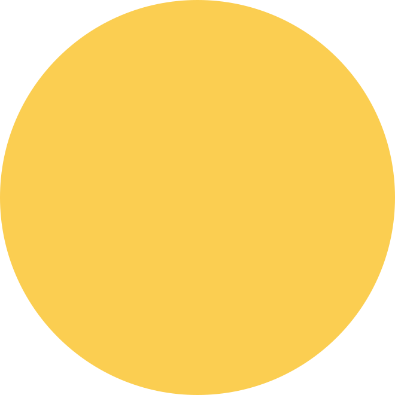
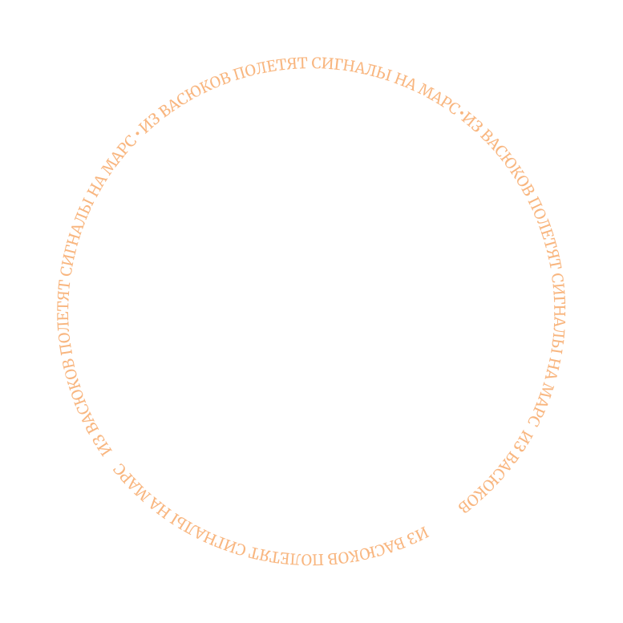

Превратите уездный город в столицу земного шара
Оплатите взнос на телеграммы для организации Международного васюкинского турнира по шахматам




Дело помощи утопающим — дело рук самих утопающих!
Шахматы двигают вперед не только культуру, но и экономику!
Лед тронулся, господа присяжные заседатели!
Плодотворная дебютная идея
Чтобы поддержать Международный васюкинский турнир
посетите лекцию на тему: «Плодотворная дебютная идея»

и Сеанс одновременной игры в шахматы на 160 досках гроссмейстера О. Бендера
| Место проведения: | Клуб «Картонажник» |
|---|---|
| Дата и время мероприятия: | 22 июня 1927 г. в 18:00 |
| Стоимость входных билетов: | 20 коп. |
| Плата за игру: | 50 коп. |
| Взнос на телеграммы: |
|
Этапы преображения Васюков
Будущие источники
обогащения васюкинцев